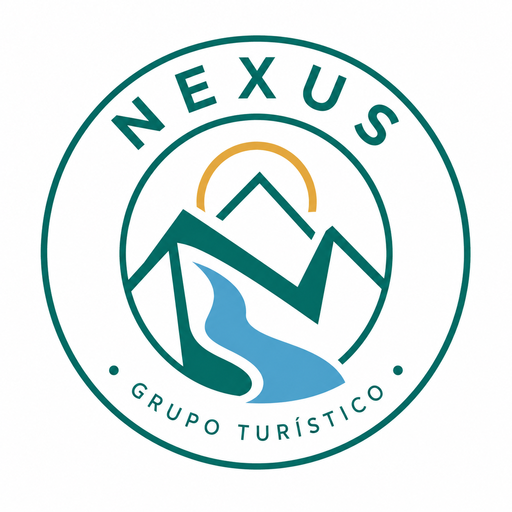

Ficha Técnica y Trazado de la Ruta
Información detallada sobre distancia, duración, inicio, término y trazado visual del recorrido.

EcoRuta TemucoExplora los senderos, recorridos patrimoniales y circuitos históricos de Temuco.
Información detallada sobre distancia, duración, inicio, término y trazado visual del recorrido.